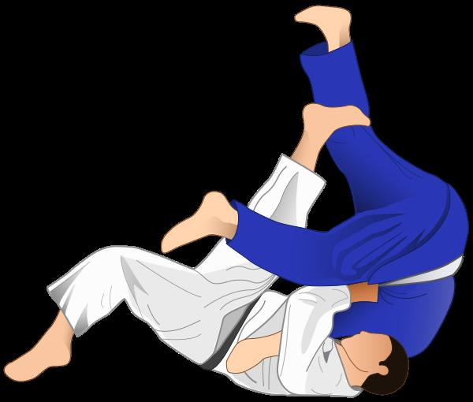
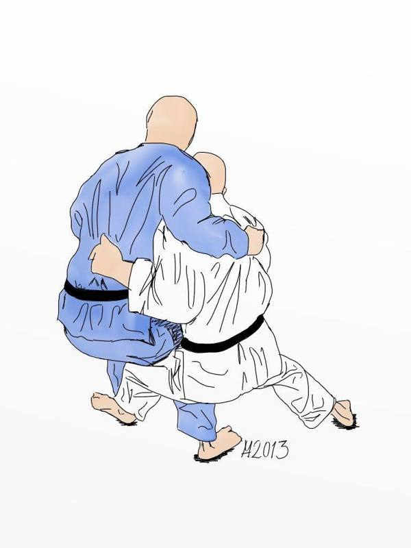
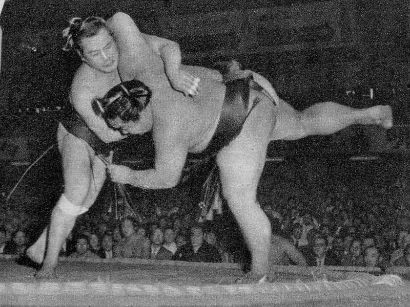
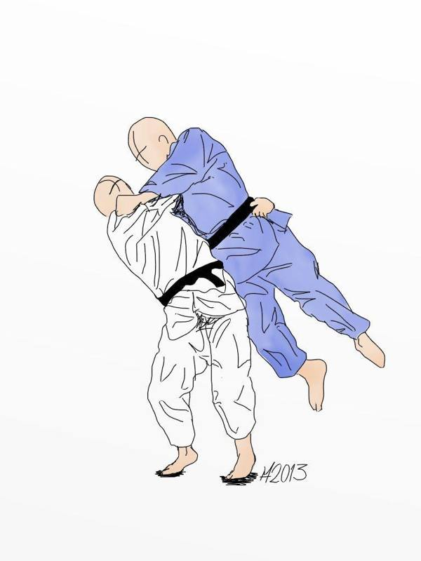
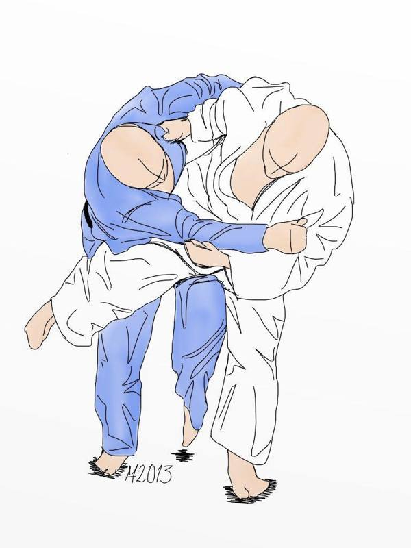
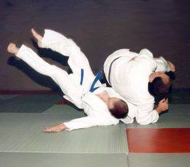
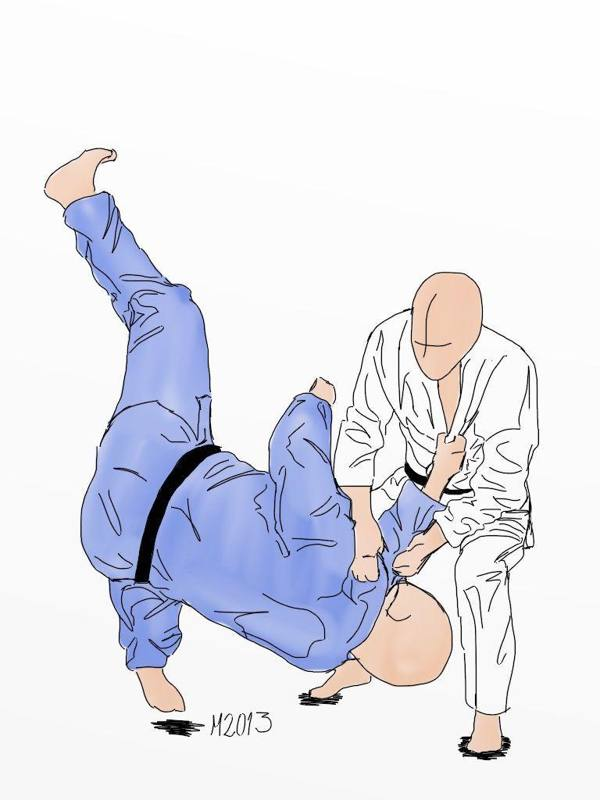

8. Gokyo Dai-yonkyō — il quarto gruppo
Il Dai-yonkyō (第四教, «quarto insegnamento») raccoglie otto tecniche che nel percorso federale sono, di regola, patrimonio acquisito fin dal programma di 3° dan: il candidato al 4° dan non ne dà qui una prima lettura, ma deve dimostrarne la padronanza analitica — fulcro, vettore, famiglia — e la collocazione storica esatta. È un gruppo di grande varietà: vi convivono tecniche di sacrificio (sumi-gaeshi, tani-otoshi, hane-makikomi, soto-makikomi), proiezioni di anche e di gambe (utsuri-goshi, o-guruma) e due te-waza di pura sensibilità (sukui-nage, uki-otoshi). Sul piano storico, il gruppo è emblematico della stratificazione del Gokyo: sumi-gaeshi, tani-otoshi, utsuri-goshi, soto-makikomi e uki-otoshi erano già codificate nel kyū-Gokyō del 1895, mentre hane-makikomi, sukui-nage e o-guruma entrarono con la revisione del 1920. Il gruppo conserva inoltre tracce preziose dell'eredità del Kitō-ryū — tani-otoshi nel Koshiki-no-kata, uki-otoshi in testa al Nage-no-kata — e registra l'evoluzione del regolamento agonistico: la forma a presa di gambe di sukui-nage (la storica te-guruma) è oggi esclusa dalla gara IJF, pur restando pienamente nel repertorio tecnico del Kōdōkan.
8.1 Sumi-gaeshi (隅返)
▶ Video Kōdōkan × IJF Academy: Sumi-gaeshi (canale ufficiale KODOKAN)

Sumi-gaeshi: il rovesciamento d’angolo (illustrazione: Jdcollins13, CC BY-SA 3.0)
Nome e origine. Sumi (隅) significa «angolo», gaeshi/kaeshi (返) «rovesciare»: «ribaltamento d'angolo». Appartiene alle ma-sutemi-waza (真捨身技), tecniche di sacrificio con caduta sulla schiena. Presente fin dal Gokyō del 1895 (allora nel dai-nikyō), è la terza ma-sutemi del Nage-no-kata. La tradizione del Tenjin Shinyō-ryū — scuola madre del judo insieme al Kitō-ryū — annovera una sumi-kaeshi tra le tecniche confluite nel sistema di Kanō: un'origine plausibile e coerente con l'apprendimento del Fondatore, pur in assenza di un documento d'attribuzione singolo.
Il principio. Come in tomoe-nage, tori cade supino sotto il baricentro di uke; ma il vettore di proiezione punta all'angolo posteriore (ushiro-sumi) e non oltre la testa in asse. Il kuzushi è in avanti, profondo; il fulcro è la schiena di tori al suolo; la leva è il collo del piede uncinato all'inguine di uke, che calcia in alto mentre le braccia continuano ad attrarre il corpo sopra di sé.
Esecuzione da fermo.
- Da kenka-yotsu, la tsuri-te afferra la schiena di uke; con la hiki-te si attira l'avversario in avanti, «come a portarlo sul proprio petto».
- Quando uke è squilibrato sulle punte, tori cade all'indietro uncinando il collo del piede all'inguine/interno coscia di uke.
- Kake: calcio in alto della gamba e trazione continua delle braccia: uke è rovesciato all'angolo posteriore, oltre la spalla di tori.
Esecuzione in movimento. È la tipica tecnica «in corsa»: da posizione laterale, con la hiki-te libera, tori si tuffa sotto uke (ingresso submarine) nell'istante in cui l'avversario avanza per prendere la presa. È inoltre un contro eccellente a uchi-mata — quando uke ritira l'anca — e alle koshi-waza in generale.
Varianti. Yoko-sumi-gaeshi (ingresso e caduta laterali, con tsugi-ashi e piede nel cavo del ginocchio); transizione pianificata a newaza (se la proiezione fallisce resta una mezza guardia favorevole); versione con presa «georgiana» alla schiena.
Errori comuni. (1) Cadere senza aver attratto uke in avanti: si finisce schiacciati sotto il suo peso. (2) Proiettare dritto oltre la testa: quella è tomoe-nage; sumi-gaeshi esce all'angolo. (3) Trazione delle braccia insufficiente durante la caduta: uke appoggia le mani al tatami e si libera.
8.2 Tani-otoshi (谷落)
▶ Video Kōdōkan × IJF Academy: Tani-otoshi (canale ufficiale KODOKAN)

Tani-otoshi: la caduta nella valle (illustrazione: M. Hultström, CC BY-SA 3.0)
Nome e origine. Tani (谷) è la «valle», otoshi (落) il «far cadere»: «caduta nella valle», nome appartenente alla categoria evocativa dei nomi «di sensazione». È una yoko-sutemi-waza (横捨身技), sacrificio sul fianco. Presente nel Gokyō del 1895 (dai-nikyō), ha radici documentate antichissime: è la nona tecnica dell'Omote del Koshiki-no-kata, il kata che Kanō preservò dal Kitō-ryū — un'eredità diretta della scuola del «sorgere e cadere».
Il principio. Contro un uke che spinge in avanti, tori fa scivolare la propria gamba (o entrambe) dietro i talloni dell'avversario come barriera e si sacrifica cadendo sul fianco; la trazione delle braccia in basso-indietro priva uke della ritirata delle gambe: il corpo cade all'indietro «nella valle». Kuzushi verso ushiro/ushiro-sumi; fulcro: la gamba-barriera; vettore: basso-indietro.
Esecuzione da fermo.
- Mentre uke spinge in avanti (o avanza), tori attira e accompagna, poi fa scivolare la gamba destra dietro entrambi i talloni di uke.
- Tsukuri: tori si abbassa e si lascia cadere sul fianco sinistro, mantenendo la gamba tesa dietro le gambe di uke.
- Kake: le braccia tirano manica e bavero in basso-indietro: uke cade supino-obliquo oltre la barriera.
Esecuzione in movimento. Efficacissima come contro all'ingresso delle koshi-waza: quando uke gira la schiena per caricare sull'anca, tori aggancia i talloni e ribalta l'avanzata. Ottima anche quando l'avversario carica in avanti con il busto. Tori deve cadere sempre di fianco, mai supino sotto uke: la posizione sotto il corpo è pericolosa e la proiezione non è valida.
Varianti. A una o a due gambe dietro i talloni; versione da kumi-kata spezzato; nel Koshiki-no-kata è eseguita in forma di kumiuchi, con l'immaginaria armatura che giustifica la postura rigida.
Errori comuni. (1) Gamba dietro un solo tallone, o non tesa: uke fa un passo indietro e si salva. (2) Cadere supini sotto uke invece che sul fianco. (3) Mancata trazione in basso: uke si accascia sulle gambe senza cadere.
8.3 Hane-makikomi (跳巻込)
▶ Video Kōdōkan × IJF Academy: Hane-makikomi (canale ufficiale KODOKAN)
Nome e origine. Hane (跳) è la «molla», il «balzo»; makikomi (巻込) significa «avvolgere trascinando dentro»: «avvolgimento a molla». Yoko-sutemi-waza. Non presente nel 1895: fu aggiunta con la revisione del 1920. È, in sostanza, la «versione sutemi» di hane-goshi: anziché completare la proiezione in piedi, tori si avvolge e rotola mantenendo la pendolare della gamba.
Il principio. Unisce la molla della gamba di hane-goshi all'avvolgimento del busto con sacrificio laterale. La gamba destra, flessa, solleva l'interno coscia di uke (fulcro e leva) mentre il corpo di tori, stretto all'avversario, ruota verso il suolo trascinandolo. Kuzushi in avanti (mae); vettore: rotazione in avanti con caduta sul fianco.
Esecuzione da fermo.
- Kuzushi in avanti; ingresso come in hane-goshi: gamba destra flessa contro l'interno coscia di uke, braccio destro che avvolge la schiena/spalla dell'avversario.
- Invece di completare in piedi, tori mantiene la molla della gamba e continua la rotazione lasciandosi cadere sul fianco sinistro.
- Kake: la gamba sospinge in alto e il busto si avvita: uke è avvolto e proiettato a terra davanti, con tori che rotola di fianco o sopra.
Esecuzione in movimento. Lo scenario classico è da kenka-yotsu: uke resiste a hane-goshi piantandosi basso, e tori converte l'attacco in makikomi senza interrompere la rotazione. Il tempismo è decisivo: la conversione deve avvenire prima che uke riacquisti la base d'appoggio.
Varianti. Raffronto con harai-makikomi (da harai-goshi, shinmeisho-no-waza) e soto-makikomi (avvolgimento senza la molla della gamba); esecuzione con presa posteriore alta alla schiena.
Errori comuni. (1) Rilasciare la gamba a molla prima della caduta: si perde la leva e uke si accuccia. (2) Cadere lateralmente senza avvolgimento: uke si sgancia e resta in piedi. (3) Kuzushi debole: tori finisce sotto l'avversario.
8.4 Sukui-nage (掬投)
▶ Video Kōdōkan × IJF Academy: Sukui-nage (canale ufficiale KODOKAN)

Sukui-nage in una tavola d’epoca giapponese (pubblico dominio)
Nome e origine. Sukui (掬) significa «raccogliere con la mano a conca», nage (投) «proiezione»: «proiezione a cucchiaio». Te-waza (手技). Dato storico essenziale per l'esame: la tecnica era storicamente nota anche come te-guruma («ruota di mani») — e con altri nomi quali te-uchi-mata, butsudan-gaeshi, kin-tsukami — finché il dipartimento di studio delle waza del Kōdōkan unificò la denominazione ufficiale in sukui-nage nell'ottobre 1955; da allora il Kōdōkan classifica formalmente te-guruma come sukui-nage. Entrò nel Gokyō con la revisione del 1920 (nel kyū-Gokyō del 1895 figurava la forma affine obi-otoshi). In gara, la versione con presa a entrambe le gambe è stata eliminata dal divieto IJF 2010-2013 di afferrare le gambe in tachi-waza.
Il principio. Kuzushi all'indietro. Tori si porta alle spalle o di fianco a uke, raccoglie dal basso le gambe (o una mano tra le gambe e una sul fianco) e lo solleva «a cucchiaio», rovesciandolo all'indietro oltre la propria anca anteriore (fulcro). Vettore: prima in alto, poi indietro.
Esecuzione da fermo.
- Si attira uke o si sfrutta la sua postura flessa in avanti; passo profondo dietro il fianco dell'avversario.
- Le mani raccolgono entrambe le gambe da dietro (o mano tra le gambe + mano sul fianco), petto contro il fianco di uke.
- Kake: si distendono le gambe sollevando uke «a conca», poi lo si rovescia all'indietro girando il busto.
Esecuzione in movimento. Il momento propizio è quando uke si ritira tirando, o si piega in avanti in difesa: tori chiude la distanza con un passo laterale profondo e raccoglie nell'istante in cui il peso di uke è sui talloni. L'abbassamento non deve essere telegrafato: se l'avversario legge l'intenzione, scarta di lato e contrattacca.
Varianti. Obi-otoshi (stessa meccanica ma con presa alla cintura anteriore; era nel kyū-Gokyō del 1895); «sukui-nage coreana»; versione con una sola gamba raccolta.
Errori comuni. (1) Sollevare con la schiena piegata: rischio lombare e leva inefficace — il sollevamento è delle gambe. (2) Raccogliere senza kuzushi all'indietro: uke resta piantato. (3) Ingresso telegrafato: uke schiva lateralmente e risponde.
8.5 Utsuri-goshi (移腰)
▶ Video Kōdōkan × IJF Academy: Utsuri-goshi (canale ufficiale KODOKAN)

Utsuri-goshi: il cambio d’anca (illustrazione: M. Hultström, CC BY-SA 3.0)
Nome e origine. Utsuri (移) significa «spostarsi, trasferirsi», goshi (腰) «anca»: «cambio d'anca» o «trasferimento d'anca». Koshi-waza (腰技). Presente fin dal Gokyō del 1895 (dai-yonkyō), è documentata in tutta la letteratura tecnica classica: Sasaki (1907), Yokoyama (1915), Kawaishi (1955), l'Illustrated Kodokan Judo (1955), Mifune e Daigo.
Il principio. È il contro per eccellenza alle koshi-waza (harai-goshi, uchi-mata, hane-goshi). Tori riceve l'attacco, abbandona la hiki-te, cinge con un braccio la vita di uke, piega le ginocchia bloccandone la «molla», lo solleva sulla propria anca e lo fa scivolare-trasferire attraverso la schiena da un lato all'altro (utsuri), proiettandolo in avanti con la torsione del busto nell'istante in cui uke tenta di recuperare la postura. È la quintessenza del go no sen: il contro nasce dopo aver ricevuto e neutralizzato.
Esecuzione da fermo.
- Uke entra con una koshi-waza; tori abbassa le anche flettendo le ginocchia, neutralizzando il caricamento.
- Tori abbandona la hiki-te e avvolge il braccio attorno alla vita di uke, afferrando il fianco opposto.
- Solleva uke sulla propria anca e lo sposta attraverso la schiena da un lato all'altro.
- Kake: quando uke reagisce raddrizzandosi, tori lo destabilizza in avanti e lo proietta distendendo le ginocchia e torcendo il busto.
Esecuzione in movimento. Richiede tempismo di ricezione: si blocca l'attacco con le ginocchia e si risponde nell'istante del recupero di uke — né prima (l'avversario non è ancora caricato), né dopo (la sua proiezione è ormai partita). Si può anche provocare l'occasione con una finta alta di koshi-waza che induca uke a spostare le anche per contrattaccare.
Varianti. Caricamento diretto sull'anca sinistra, «semplicemente avanzando il piede sinistro davanti a uke» (forma descritta da Kanō); impiego specifico come contro a hane-goshi e uchi-mata.
Errori comuni. (1) Contrattaccare troppo presto o troppo tardi rispetto alla finestra del caricamento. (2) Non sollevare-controllare uke prima dello spostamento: ricade in piedi. (3) Presa alla vita debole: uke si sgancia durante la rotazione.
8.6 O-guruma (大車)
▶ Video Kōdōkan × IJF Academy: O-guruma (canale ufficiale KODOKAN)

O-guruma: la grande ruota (illustrazione: M. Hultström, CC BY-SA 3.0)
Nome e origine. Ō (大) è «grande», kuruma/guruma (車) «ruota»: «grande ruota». Ashi-waza (足技). Non presente nel 1895: fu aggiunta con la revisione del 1920. Figura nell'Illustrated Kodokan Judo (1955) e nell'opera di Mifune.
Il principio. L'ingresso ricorda harai-goshi, ma la gamba destra tesa si distende trasversalmente davanti al basso addome e ai fianchi di uke — più in alto di harai-goshi — e non spazza: funziona da asse fisso di una grande ruota. La rotazione delle spalle e la trazione circolare delle braccia fanno «ruotare» uke oltre la gamba. Kuzushi in avanti o all'angolo anteriore; fulcro: gamba tesa + anca aderente.
Esecuzione da fermo.
- Kuzushi in avanti-destro con la tsuri-te alta; uke sulle punte.
- Tsukuri: pivot sul piede sinistro, ingresso con la schiena quasi frontale; la gamba destra distesa taglia davanti alle cosce/anche di uke, punta del piede sollevata.
- Kake: rotazione decisa del busto a sinistra, braccia che tirano in cerchio: uke si rovescia oltre la gamba con un'ampia rotazione.
Esecuzione in movimento. Si aggancia il passo avanti di uke o la sua reazione raddrizzata a una finta in avanti. La gamba si distende dopo il contatto dell'anca, non prima: distenderla in anticipo telegrafa la tecnica e permette la schivata. Tutto il movimento deve restare un unico giro coordinato di piede d'appoggio, anca e spalle.
Varianti. Raffronto con ashi-guruma (gamba più bassa, sul ginocchio) e o-soto-guruma (dai-gokyō: l'asse è dietro entrambe le gambe); se la gamba spazza anziché restare asse, la tecnica diventa harai-goshi.
Errori comuni. (1) Gamba troppo bassa o flessa: si perde l'asse e la tecnica degenera. (2) Busto che non ruota: uke resta in equilibrio appoggiato alla gamba. (3) Anche non aderenti al corpo di uke: l'avversario si sottrae all'indietro.
8.7 Soto-makikomi (外巻込)
▶ Video Kōdōkan × IJF Academy: Soto-makikomi (canale ufficiale KODOKAN)

Soto-makikomi in allenamento (foto: H. Zuehl, CC BY 2.5)
Nome e origine. Soto (外) è «esterno», makikomi (巻込) «avvolgere trascinando»: «avvolgimento esterno». Yoko-sutemi-waza. Presente fin dal Gokyō del 1895 (dai-yonkyō del kyū-Gokyō — tra le makikomi originali del sistema) e ricollocata nel medesimo gruppo nel 1920; trattata da Mifune, Kawaishi e Daigo.
Il principio. Dopo un ingresso tipo harai-goshi/koshi-waza, il braccio destro di tori avvolge dall'esterno il busto (e spesso il braccio) di uke; tori sacrifica cadendo sul fianco e continua la rotazione, trascinando l'avversario avvitato al suolo. Kuzushi in avanti; fulcro: il contatto dei corpi; vettore: rotazionale, dato dalla trazione più il peso del corpo in caduta. Insieme a hane-makikomi, è il modello didattico degli «avvolgimenti»: la proiezione si completa a terra senza mai interrompere il momento rotatorio.
Esecuzione da fermo.
- Kuzushi in avanti; ingresso con anca destra e braccio che avvolge la schiena e il braccio destro di uke.
- Senza completare in piedi, tori prosegue la rotazione e si lascia cadere sul fianco sinistro.
- Kake: il peso del corpo e la trazione continua «arrotolano» uke a terra in avanti; tori controlla l'atterraggio per non schiacciare pericolosamente il braccio avvolto.
Esecuzione in movimento. È la classica renraku-waza: harai-goshi o o-soto-gari resistito → soto-makikomi senza soluzione di continuità. È particolarmente efficace quando uke si pianta basso contro l'anca: la sua stessa resistenza fornisce il momento che alimenta l'avvolgimento.
Varianti. Raffronto con uchi-makikomi (avvolgimento interno, habukareta-waza del 1895) e o-soto-makikomi (shinmeisho-no-waza); versione tipo «seoi-makikomi» con il braccio sopra la spalla di uke.
Errori comuni. (1) Sacrificarsi prima del kuzushi: uke rotola via o contrattacca. (2) Avvolgimento lento o interrotto: si spezza il momento rotatorio. (3) Cadere con tutto il peso sul braccio avvolto di uke: rischio traumatico alla spalla del partner — in didattica il controllo dell'atterraggio è obbligatorio.
8.8 Uki-otoshi (浮落)
▶ Video Kōdōkan × IJF Academy: Uki-otoshi (canale ufficiale KODOKAN)

Uki-otoshi: la caduta fluttuante (illustrazione: M. Hultström, CC BY-SA 3.0)
Nome e origine. Uki (浮) significa «galleggiare», otoshi (落) «far cadere»: «caduta fluttuante». Te-waza. Presente fin dal Gokyō del 1895 (dai-yonkyō), è la prima tecnica del Nage-no-kata: collocazione interpretata come omaggio al Kitō-ryū — la scuola che Kanō stava apprendendo quando formulò il kata — di cui uki-otoshi riprende il principio (è affine a mizu-nagare e hiki-otoshi del Koshiki-no-kata). Il Kōdōkan precisa che uki-otoshi e sumi-otoshi appartengono alla stessa famiglia tradizionalmente detta kuki-nage.
Il principio. È l'archetipo del jū: nessuna leva d'anca né di gamba. Uke è portato in posizione «galleggiante» sulle punte, all'angolo anteriore (kuzushi totale); tori si abbassa accompagnando e tira con entrambe le mani verso il proprio fianco: uke ruota in un ampio cerchio attorno alla punta del proprio piede destro e cade. Vettore: arco in avanti-laterale; fulcro: il piede perno di uke stesso.
Esecuzione da fermo (forma del Nage-no-kata).
- Presa destra; tori indietreggia con tsugi-ashi in tre passi crescenti, attirando uke in avanti.
- Al terzo passo allunga il passo sinistro all'indietro, portando uke «a galleggiare» sulle punte all'angolo anteriore destro.
- Tori depone il ginocchio sinistro al tatami (punta del piede a terra, angolo di 30-40°).
- Kake: entrambe le mani tirano con forza verso il proprio fianco sinistro; uke cade in un grande cerchio oltre il proprio piede destro.
Esecuzione in movimento. In randori si esegue quasi sempre in piedi: si insegue uke che indietreggia riportandolo in avanti («prima lo si fa arretrare, poi fluttuare»), oppure si convertono in uki-otoshi le schivate di o-soto-gari, o-uchi-gari, ko-uchi-gari e hane-goshi: schivando la gamba d'attacco, uke «galleggia» e si avvita a terra. Sono tutte forme riconosciute dal Kōdōkan.
Varianti. Forma da kata (con il ginocchio a terra) e forma in piedi da randori; varianti con presa alla cintura posteriore e al ginocchio, classificate uki-otoshi dal Kōdōkan; raffronto con sumi-otoshi (dai-gokyō) e tai-otoshi.
Errori comuni. (1) Tirare in basso prima che uke galleggi: l'avversario si piega in vita e resiste. (2) Avvitare i polsi invece di concentrare la trazione verso il proprio fianco: la proiezione si spezza. (3) Ginocchio deposto troppo presto o troppo lontano da uke: si perde il contatto e il cerchio di caduta.
Per l'esame. Nel dai-yonkyō il commissario attende tre precisioni: la distinzione storica tra le tecniche del 1895 (sumi-gaeshi, tani-otoshi, utsuri-goshi, soto-makikomi, uki-otoshi) e le aggiunte del 1920 (hane-makikomi, sukui-nage, o-guruma); la presenza nei kata (sumi-gaeshi e uki-otoshi nel Nage-no-kata, tani-otoshi nel Koshiki-no-kata); e l'identità sukui-nage = te-guruma (denominazione unificata dal Kōdōkan nel 1955), con la conseguente esclusione della forma a presa di gambe dalla gara IJF. Si richiede inoltre di non confondere hane-goshi/hane-makikomi, o-guruma/ashi-guruma/o-soto-guruma, soto-makikomi/uchi-makikomi, uki-otoshi/sumi-otoshi.